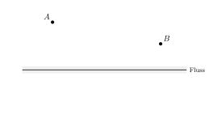
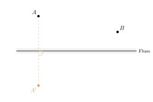
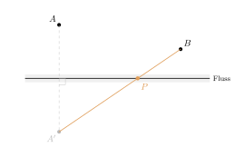
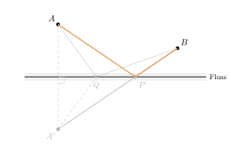

Aufgabe 3.6
Die Orte Adorf und Belingen liegen auf derselben Seite eines geradlinig verlaufenden Flusses. Über den Fluss soll eine Brücke gebaut werden und jeder Ort soll eine direkte Zufahrtsstrasse erhalten. An welcher Stelle des Flusses (Breite vernachlässigt) soll die Brücke gebaut werden, damit die Gesamtlänge der Zufahrtsstrassen so klein wie möglich ist?
Erkunden Sie die Situation zunächst mit GeoGebra, und begründen Sie ihre Hypothese dann mathematisch
Womit anfangen? Probieren Sie mit GeoGebra ein paar Brückenstellen aus und achten Sie darauf, wann die Gesamtlänge kleiner wird.
- Warum fällt es schwer zu entscheiden, welcher dieser geknickten Wege der kürzeste ist?
- Was ändert sich an den Weglängen, wenn Sie einen der beiden Orte am Fluss spiegeln?
- Wann kann ein Weg über einen Uferpunkt überhaupt gerade sein?
Gegeben: die Orte $A$ und $B$ auf derselben Seite eines geradlinigen Flusses.
Schritt 1: die Lage ansehen

Warum man so nicht weiterkommt: Jeder Weg von $A$ über einen Uferpunkt nach $B$ ist geknickt, und alle sehen gleich aus. Es gibt keinen Grund, einen davon dem anderen vorzuziehen — die Aufgabe ist in dieser Form nicht zu entscheiden.
Schritt 2: $A$ am Fluss spiegeln

Was sich dadurch ändert: Für jeden Uferpunkt $P$ gilt $|AP| = |A'P|$, denn $P$ liegt auf der Spiegelachse. Die Weglängen bleiben also alle, wie sie waren. Verändert hat sich nur die Lage: $A'$ und $B$ liegen nun auf verschiedenen Uferseiten.
Schritt 3: $A'$ mit $B$ verbinden

Warum das die Antwort gibt: Weil $A'$ und $B$ auf verschiedenen Seiten liegen, schneidet die Strecke $\overline{A'B}$ das Ufer — es gibt also einen geraden Weg von $A'$ nach $B$ über einen Uferpunkt. Und der gerade ist der kürzeste. Der Schnittpunkt ist der gesuchte Punkt $P$.
Schritt 4: der Weg, und ein Vergleich

Woran man es sieht: Für einen anderen Uferpunkt $Q$ ist $A' \to Q \to B$ geknickt und damit länger als die Strecke $\overline{A'B}$. Genau um diesen Unterschied ist auch der Weg über $Q$ länger als der über $P$.
Warum kein anderer Punkt es tut
Für jeden Uferpunkt $Q$ gilt nach der Dreiecksungleichung \[|AQ| + |QB| = |A'Q| + |QB| \geq |A'B|,\] mit Gleichheit genau dann, wenn $Q$ auf der Strecke $\overline{A'B}$ liegt. Da $A'$ und $B$ auf verschiedenen Uferseiten liegen, gibt es genau einen solchen Uferpunkt — und das ist $P$.
Im Video: Etappe 7 · Winter‘sche Grunderfahrungen bei 3:19